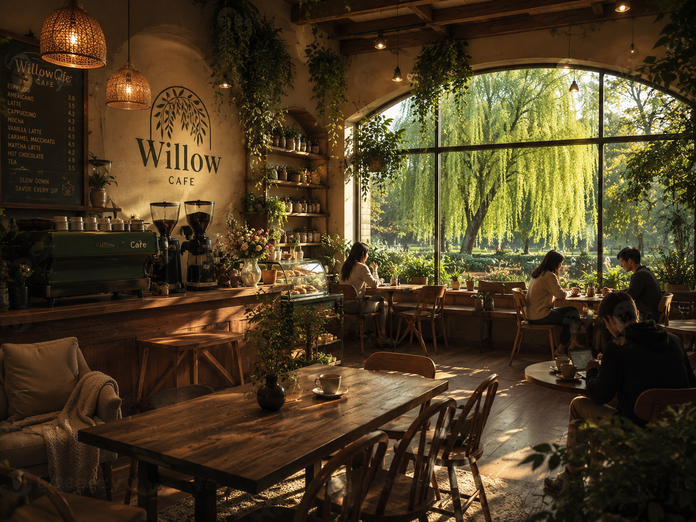

Quality Beans
We present the brand as a coffee shop that selects beans carefully for aroma, taste, and balance.
Our Story
Willow Brew is a cozy neighborhood café where every cup is crafted with care. From rich espresso to smooth handcrafted lattes, we serve quality coffee made from carefully selected beans. Whether you're catching up with friends, getting work done, or simply enjoying a quiet moment, Willow Brew is your place to slow down and savor every sip.

Brand Background
The website is designed to help customers explore Willow Brew's menu, learn about the brand, submit reviews, and register as simulated members. The design uses dark coffee tones, warm copper, and soft cream colours to create a premium coffee-house identity.
The layout also supports responsive design, accessibility basics, and pure JavaScript interactivity without using external CSS or JavaScript frameworks.
What We Value
We present the brand as a coffee shop that selects beans carefully for aroma, taste, and balance.
The website tone is friendly and welcoming so customers feel comfortable exploring the brand.
The site uses interactive features such as theme switching, registration, catalogue search, and reviews.